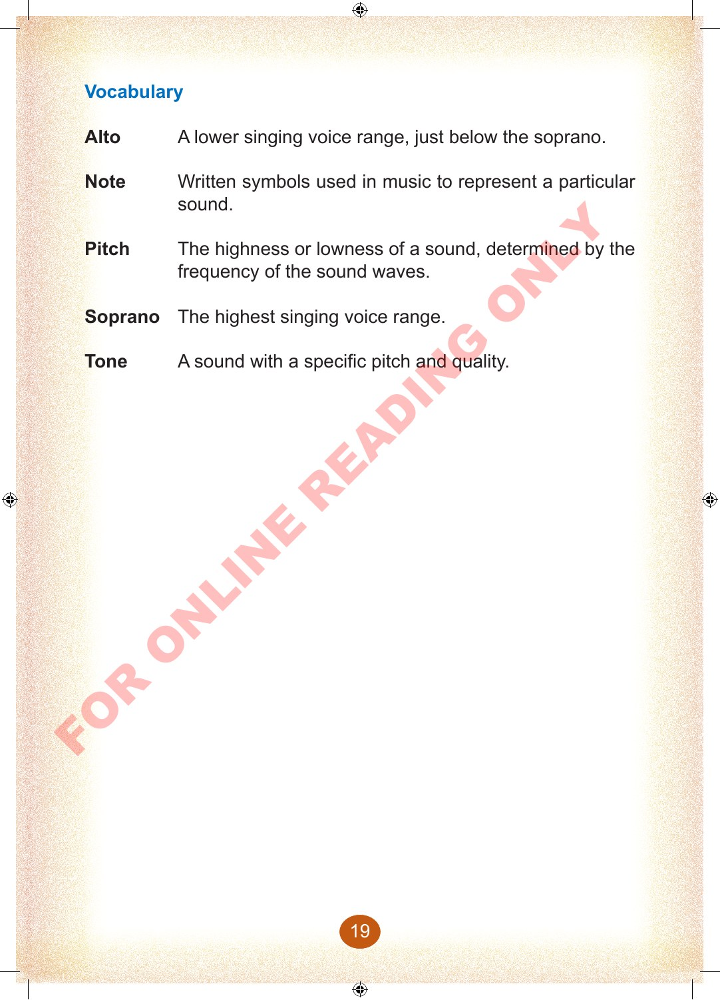

Vocabulary
Alto
A lower singing voice range, just below the soprano.
Note
Written symbols used in music to represent a particular sound.
Pitch
The highness or lowness of a sound, determined by the frequency of the sound waves.
Soprano
The highest singing voice range.
Tone
A sound with a specific pitch and quality.
FOR ONLINE READING ONLY